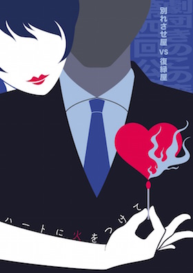
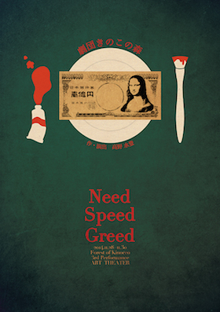
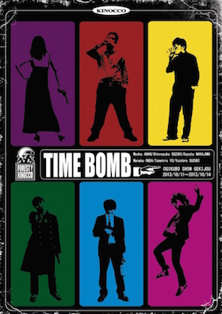

作品



参加者
- 主宰 高野 水登 15期
- 舞台監督 木下 千尋
- 美術 野口紗綾
- 制作 谷 陽歩
- 制作補佐 久木野 実玖
略歴
2013
- 旗揚げ公演「あまりに雄々しいCAT FIGHT!!」STスポット横浜
- 第二回公演「御手洗一家の自業自得」STスポット横浜
2014
- 第三回公演「ベイビィ･ポータブル･ロック」BroaderHouse
2015
- 第４回公演『その花の言うとおり』北池袋新生館シアター
- 活動休止